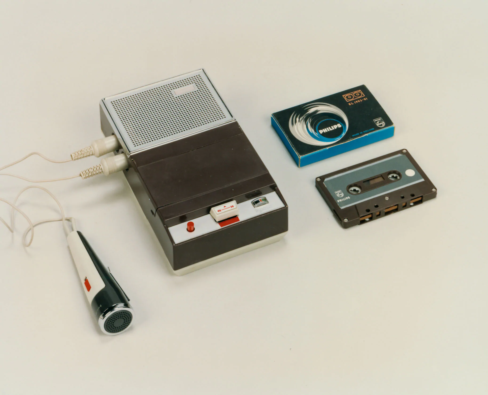
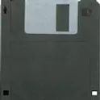
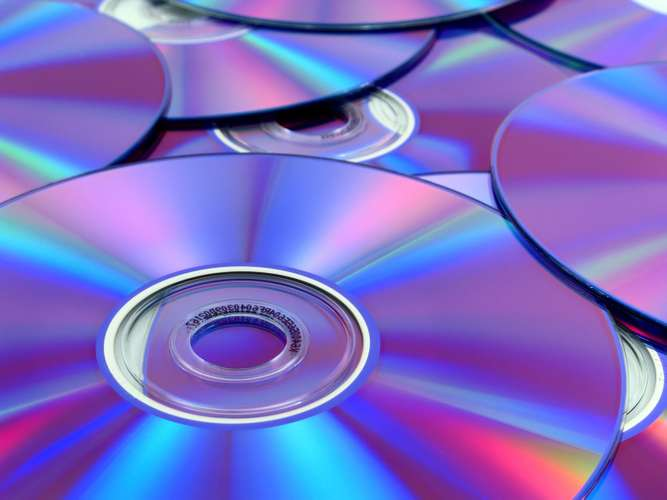

 Cassette Tapes are cassette containers of magnetic tape. In 1963, Philips introduced the Compact Cassette. It was originally meant for voice recordings, but music, and later computer data was recorded onto higher-quality magnetic tape. Instead of punch cards or floppy disks, home computers used this relatively inexpensive medium, as music cassettes were already a popular product. The Commodore 64 used cassette tapes to store programs, but tape misreads were frequent, so needing multiple attempts to load a program was the norm. Most programs loaded with speeds from 500-2000 bits (62.5-250 bytes) per second, but a few managed to get 4000 bits (500 bytes) per second. A 2000 bps read rate would yield a moderate 660 kilobytes on each side of a 90-minute tape.
 The floppy disk was invented by IBM employees as a replacement to the paper punch cards IBM mainframes used to read. It used to be just a floppy disk of magnetic material, but due to how easily the disks got dirty and damaged, a plastic sleeve with cleaning elements to keep the disk serviceable. The first floppies only stored 80 kilobytes of data, which isn't a lot now, but was equivalent to around 3000 paper cards, greatly reducing the environmental impact of IBM mainframes. Later on, high-capacity floppies were able to store 1.44 megabytes of data. Floppy disks were able to stay an important data medium, with operating systems and programs of the era being installed off of floppies. Even today, the floppy disk is used as a saving icon; the floppy disk is a timeless storage medium.
 Released by Philips and Sony in 1982, the Compact Disk shook the world of entertainment and digital storage. Instead of storing audio in an analog, physical medium, like a phonograph vinyl disk, the CD digitally stores 0s and 1s (pits and lands), also known as binary data, to present audio and computer data. The CD could store 300 megabytes, which is over 200 times more data than the highest capacity floppy disk. The optical (light-based) storage format was much smaller and precise than magnetic media, so it was able to surpass even the hard drives relevant at the time of release. CDs are also relatively easy to produce, plastic and aluminum is stamped with data from a master disk or written with a laser. This mind-boggling amount of storage allowed for software to reach new heights, developers now had tens to hundreds times more storage to work with. In 1995, Philips and Sony collaborated again to release the Digital Video Disk, made to be able to store HD (high-definition) video. The new disk was able to store 4.7 gigabytes (~4700 megabytes), which was around 15 times more storage than the old Compact Disk. The DVD was the same size as the CD, but it uses significantly smaller and more focused lasers to fit more pits and lands to squeeze in more data. Later on, HD-DVDs and Blu-Ray disks used shorter and smaller wavelength blue-violet lasers to increase the data capacity by ~3-5 times. As time went on, optical media became more and more efficient, allowing more and more data to be stored cheaply, allowing software, video, and music to be sold and distributed relatively inexpensively.